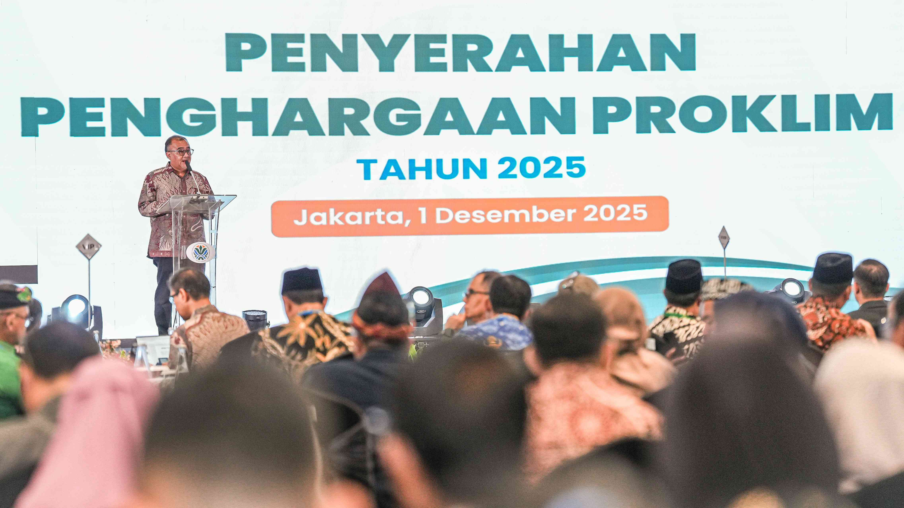

Program Kampung Iklim (ProKlim)
Solusi aksi nyata untuk menghadapi perubahan iklim — meningkatkan keterlibatan masyarakat dan pemerintah daerah dalam adaptasi dampak perubahan iklim dan mitigasi emisi gas rumah kaca secara berkelanjutan.

Apa itu ProKlim?
Perubahan iklim merupakan tantangan global yang dampaknya sangat nyata dirasakan hingga ke tingkat lokal — dari peningkatan suhu, perubahan pola hujan, hingga bencana alam seperti banjir dan kekeringan. Untuk menjawab tantangan tersebut, Kementerian Lingkungan Hidup/Badan Pengendalian Lingkungan Hidup menginisiasi program strategis bernama Program Kampung Iklim (ProKlim).
ProKlim adalah program nasional yang bertujuan meningkatkan keterlibatan masyarakat dan pemerintah daerah dalam upaya adaptasi terhadap dampak perubahan iklim dan mitigasi emisi gas rumah kaca (GRK) secara berkelanjutan. Program ini mendorong aksi nyata berbasis komunitas di tingkat tapak (desa, kelurahan, atau lingkungan RW/RT), menciptakan sinergi antara kebijakan nasional dan pelaksanaan di tingkat lokal, serta memperkuat kolaborasi antar pemangku kepentingan — masyarakat, pemerintah, sektor swasta, dan lembaga swadaya masyarakat.
Tujuan utama
- Meningkatkan pemahaman dan kapasitas masyarakat dalam menghadapi perubahan iklim.
- Mendorong inisiatif lokal dalam mengelola sumber daya alam secara berkelanjutan.
- Meningkatkan kontribusi Indonesia dalam pengurangan emisi GRK.
- Membangun ketahanan iklim di wilayah-wilayah rentan.
Sasaran
- Komunitas masyarakat yang aktif dalam kegiatan adaptasi dan mitigasi iklim.
- Desa atau kelurahan yang memiliki potensi dan kemauan untuk bertransformasi menjadi wilayah yang tangguh terhadap perubahan iklim.
Informasi lengkap pada laman resmi ProKlim membuka situs lain.
Identifikasi Lokasi Potensial
Pemerintah daerah, komunitas, atau lembaga dapat mengusulkan wilayahnya untuk diikutsertakan dalam ProKlim.
Pendaftaran dan Verifikasi
Wilayah yang memenuhi kriteria diverifikasi oleh tim dari KLH/BPLH dan dinilai berdasarkan indikator kegiatan adaptasi dan mitigasi.
Pendampingan dan Fasilitasi
KLH/BPLH dan mitra memberikan pelatihan, bimbingan teknis, dan dukungan dalam pelaksanaan kegiatan.
Evaluasi dan Apresiasi
Lokasi ProKlim yang berhasil diberikan penghargaan berupa sertifikat, piagam, hingga trofi ProKlim Nasional.
Kegiatan dalam ProKlim
ProKlim mencakup dua kategori utama kegiatan: adaptasi perubahan iklim dan mitigasi perubahan iklim.
Kegiatan Adaptasi
Upaya untuk menyesuaikan diri dengan dampak perubahan iklim yang tidak dapat dihindari, antara lain:
- Pengelolaan sumber daya air — sumur resapan, panen air hujan, embung desa.
- Ketahanan pangan — pertanian organik, vertical garden, pemanfaatan lahan pekarangan.
- Kesehatan masyarakat — pencegahan penyakit yang meningkat karena perubahan iklim (misalnya DBD).
- Pengurangan risiko bencana — peta rawan bencana, pelatihan tanggap darurat berbasis masyarakat.
Kegiatan Mitigasi
Upaya untuk menurunkan atau mencegah emisi gas rumah kaca, antara lain:
- Pengelolaan sampah terpadu — daur ulang, bank sampah, komposting.
- Efisiensi energi dan energi terbarukan — pemanfaatan biogas, panel surya, hemat listrik.
- Penghijauan dan konservasi — penanaman pohon, perlindungan kawasan resapan air.
Apresiasi berjenjang ProKlim
ProKlim memberikan apresiasi berdasarkan tingkat keterlibatan dan keberhasilan komunitas.
ProKlim Pratama
Untuk komunitas yang memulai inisiatif awal.
ProKlim Madya
Untuk komunitas yang telah melaksanakan kegiatan adaptasi dan mitigasi.
ProKlim Utama
Untuk komunitas yang memiliki sistem kelembagaan dan keberlanjutan program.
Trofi ProKlim Nasional
Penghargaan tertinggi untuk komunitas yang menunjukkan praktik terbaik dan bisa direplikasi.
Mengapa komunitas perlu bergabung?
Kualitas lingkungan lokal
Peningkatan kualitas lingkungan hidup di tingkat lokal.
Pemberdayaan masyarakat
Pemberdayaan masyarakat dan peningkatan kapasitas dalam menghadapi perubahan iklim.
Kelembagaan lokal kuat
Penguatan kelembagaan lokal agar program berkelanjutan.
Pengakuan pemerintah
Pengakuan dan apresiasi dari pemerintah pusat.
Kontribusi penurunan emisi
Kontribusi nyata terhadap target penurunan emisi GRK Indonesia.
Kolaborasi lintas pihak
Sinergi masyarakat, pemerintah, sektor swasta, dan lembaga swadaya masyarakat.
Mari wujudkan kampung yang tangguh iklim!
Melalui ProKlim, Indonesia mengintegrasikan pembangunan berkelanjutan dengan perlindungan iklim di tingkat akar rumput.